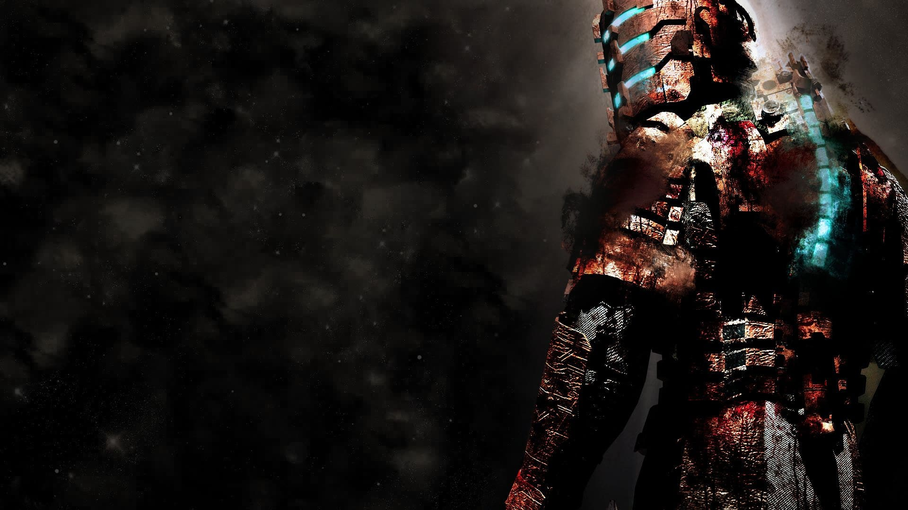

Introducción

Dead Space es una de las sagas de terror y ciencia ficción más importantes de los videojuegos. La historia combina horror psicológico, supervivencia espacial y criaturas grotescas conocidas como Necromorfos.
A lo largo de la saga seguimos principalmente a Isaac Clarke, un ingeniero atrapado en una pesadilla cósmica ligada a artefactos alienígenas llamados Marcadores.
La franquicia se caracteriza por su atmósfera opresiva, sonido aterrador y una narrativa llena de conspiraciones, locura y tragedias humanas.
Orden cronológico de Dead Space

- Dead Space (2008 / Remake 2023)
- Dead Space: Extraction
- Dead Space Ignition
- Dead Space
- Dead Space Mobile
- Dead Space 2: Severed
- Dead Space 2
- Dead Space 3
- Dead Space 3: Awakened